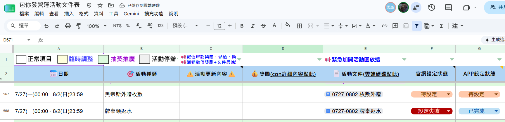

推播自動發送/追蹤數據系統 — 使用指南
推播自動發送/追蹤數據系統 — 使用指南
版本：v1.0 撰寫日期：2026-06-01
📝 修訂紀錄
使用指南.md 確認完畢後，須同步更新 使用指南.html，並在下方修訂紀錄補上版本資訊。
| 版本 | 日期 | 執行人 | 修訂內容 |
|---|---|---|---|
| v1.0 | 2026-06-01 | 呱呱 | 初版發布 |
🏃 快速入門
這個系統是什麼？
一套本機自動化工具，讓你不用手動登入後台，系統會自動把 Google Sheets 上填好的推播資料送出，並把後台的成效數據回填回試算表。
匯出統計 xlsx
這個功能可以幹嘛？
| 我想做的事 | 怎麼做 |
|---|---|
| 發送推播 | 在 Google Sheets 填好資料，點「立即執行發送」 |
| 查看推播成效數據 | 點「匯入統計數據」，系統自動回填 |
1. 環境需求
2. 第一次使用新電腦
1安裝 Node.js
- 前往 https://nodejs.org
- 點選左邊「LTS」版本下載
- 執行安裝檔，一直按「Next」直到完成
- 安裝完後重新啟動電腦
2確認有 Google Chrome
如果沒有，前往 https://www.google.com/chrome 安裝。
3雙擊 start.bat 啟動
- 第一次會自動安裝套件，多等幾秒
- 系統開啟後瀏覽器會自動打開介面

3. 功能說明
▲ 實際執行示範影片
3.1 推播發送
用途：自動把 Google Sheets 裡狀態為「待發送」的推播逐筆送出後台。
操作步驟：

- 在 試算表 填好推播資料（日期、時間、標題、廣告內容、狀態填「待發送」）
- 到
start.bat開啟的介面，點「立即執行發送」
- 系統自動發送，完成後 G 欄會自動標記「已發送」
3.2 統計回填
用途：自動從後台取得推播成效數據（點閱次數、發送次數、開啟率），回填到試算表 H / I / J 欄。

操作步驟：
- 點「匯入統計數據」

- 系統自動登入後台、匯出資料、比對試算表並寫入

⚠️ 若有推播資料在試算表中找不到對應列，系統會彈出視窗通知。
3.3 排程設定
用途：設定每天自動在指定時間執行「推播發送」與「統計回填」。

操作步驟：
- 在排程設定輸入時間（例如
10:00） - 點「儲存」
- 保持
start.bat的 cmd 視窗開著
系統在設定的小時內自動執行一次，當天不會重複執行。
3.4 後台帳號設定
用途：修改登入後台用的帳號與密碼。

修改完點「儲存」，下次執行自動生效。
3.5 Google 帳號設定
用途：重新綁定 Google 帳號（換帳號或登入狀態失效時使用）。
- 點「重新登入 Google 帳號」
- 在開啟的瀏覽器完成 Google 登入
- 關閉瀏覽器，完成
4. 常見問題
Q：出現「node 不是內部或外部命令」
Node.js 沒裝好，重新執行步驟 1，裝完重開電腦。
Q：出現 EADDRINUSE: address already in use :::3000
Port 3000 已被佔用，表示系統已在背景執行中。請：
- 關掉所有
start.bat的 cmd 視窗 - 關掉瀏覽器裡已開啟的介面頁面
- 再重新雙擊
start.bat
Q：出現 RBAC access denied
刪掉 系統資料\google_auth 資料夾，重新登入 Google 帳號。
Q：換新電腦，推播跑不動
執行一次「重新登入 Google 帳號」重新授權，通常就能解決。
Q：後台介面有更換，腳本失效
雙擊 點我錄製腳本.bat，錄製後提供給 AI 重寫程式碼。
Q：試算表欄位調整了（欄位順序或名稱有變）
試算表欄位與腳本的對應是寫死在程式裡的，欄位一旦異動需同步更新程式碼。提供新的欄位結構給 AI，請 AI 修改 src\auto-post-from-sheet.js 的欄位對應邏輯。
Q：後台推播填寫欄位有新增或更動
雙擊 點我錄製腳本.bat 重新錄製操作流程，連同新的欄位需求一起提供給 AI 重寫程式碼。
Q：推播發送錯誤，需要修正重發
- 到後台把已發送的推播刪掉
- 在試算表上直接覆蓋該列為正確內容
- G 欄狀態改回「待發送」
- 點「立即執行發送」重新發送
Q：後台網址有更換，要怎麼改
修改 src\auto-post-from-sheet.js 第 12 行與 src\sync-push-stats.js 第 11 行的 BACKEND_URL。